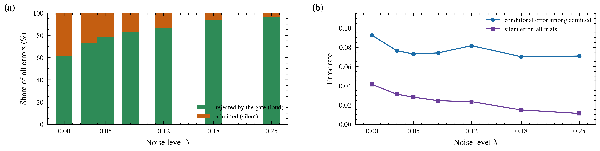
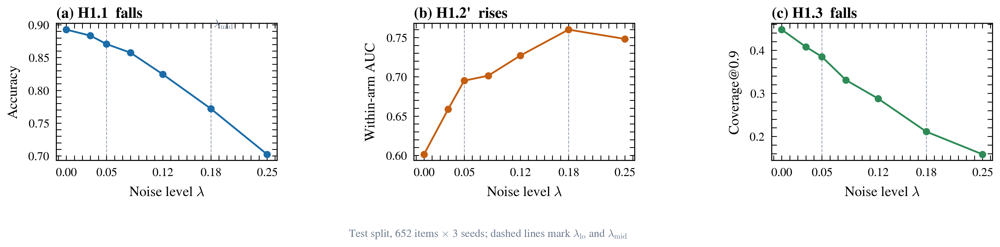
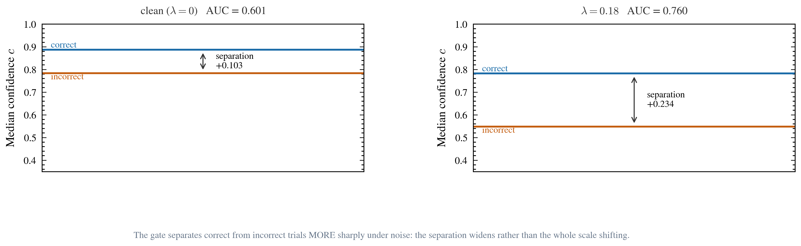
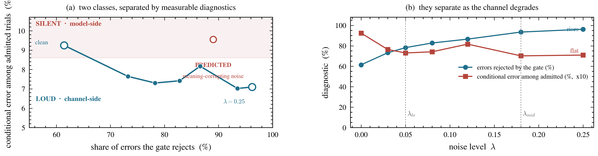
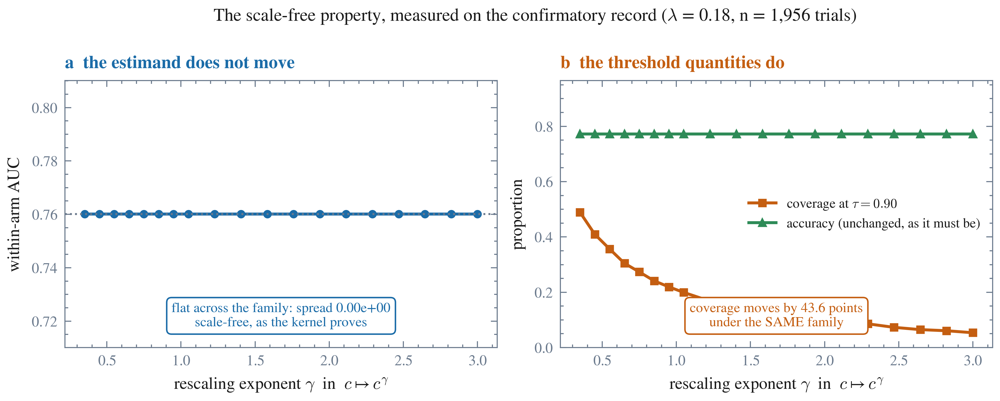

Running title. The limen moves, and the damage lands on availability
Large language models are now addressed in text that humans type, dictate or reconstruct from documents, and they increasingly carry a gate that decides whether to answer at all. The object of study is therefore a control loop — an intention is encoded through an orthographic channel under channel-specific noise, a frozen instrument turns the text into graded evidence, and a gate turns evidence into action — in which orthographic noise is a normal disturbance rather than an exception, and the gate's threshold is the limen the loop turns on. The prevailing fear is the silent failure: that input corruption pushes wrong answers past a confidence threshold so they arrive looking like correct ones. We tested that premise directly, on a frozen non-autoregressive encoder and a 652-item typed-decision bank with a keystroke-faithful noise channel calibrated against a published human readability anchor, across seven noise levels and three seeds (13,692 trials). The premise fails, and it fails in the informative direction. Typing noise cost 12.1 accuracy points ($p = 4.4 \times 10^{-36}$) and 23.7 coverage points at the reported threshold (mean paired fall 0.2904, 95 % CI [0.2679, 0.3154], $p = 5.0 \times 10^{-5}$), while the discriminability of the gate rose, from a within-arm AUC of 0.6014 to 0.7601 ($p = 2.0 \times 10^{-4}$): the share of errors arriving below the gate rose from 61.4 % to 93.5 %. The errors are loud, not silent, because the corruption is what makes them wrong. Two literatures that both concern this — typo robustness, which reports aggregate degradation, and selective prediction, which evaluates risk–coverage on clean input — do not meet; this study measures their intersection. A machine-checked formal core shows why the naive premise could never have held (a fixed-threshold silent-error count is non-increasing in its threshold, so no confidence-deflating manipulation can raise it) and why the estimand that does hold is robust to the instrument's own warning that its confidences are uncalibrated (the statistic reads ordering, and is invariant under any strictly increasing rescaling, measured as a spread of exactly 0.000 against 43.6 points of movement in a threshold quantity). In the age of language models the operational consequence is that input noise degrades such a system by making it decline, not by making it lie: the failure is one of availability, and the remedy is throughput rather than recalibration.
A typed request is a noisy channel. The human intends a string; the keyboard, the dictation model or the document converter returns a different one; the model receives the result with no way to distinguish a typo from intent. This has always been true, but it has only recently become the dominant interface: language models are addressed in natural language typed by humans, fed by retrieval pipelines carrying scanned text, and used inside agent runtimes that pass their own generated text back as the next step's input. Every one of those steps destroys symbols, and they compose.
What makes this more than an input-validation problem is that a language model is increasingly given a gate: a decision, made from its own confidence, about whether to answer or to decline. In a classifier that is selective prediction; in a chat system it is an abstention feature; in an agent it is the choice to call a tool, to act on a result, or to keep working. The gate is the interface — it is where the model's self-assessment becomes an action that a human experiences. The disturbance is therefore a property of the pairing rather than of either party: it is produced by the human's keyboard, it is not authored deliberately, and the model cannot tell it from intent.
The title calls the input channel a structural disturbance, and that word is a claim about a system rather than about a model. The claim is that human–model language interaction is a structurally biased coupled control system in which orthographic channels and input noise are normal disturbances, not exceptions — and it is testable because the system can be written down as one chain.
An intention becomes an action only by passing three maps in order:
$$ \underbrace{i}_{\text{intention}} \;\xrightarrow{\;E(\cdot,\,s,\,n \sim \mathcal{N}_s(\lambda))\;}\; \underbrace{x}_{\text{channel output}} \;\xrightarrow{\;f_\theta(\cdot,\,q)\;}\; \underbrace{(\mathbf{p},\,c)}_{\text{graded evidence}} \;\xrightarrow{\;g_\tau\;}\; \underbrace{a}_{\text{action}} $$
| symbol | meaning |
|---|---|
| $i$ | the user's communicative or task intention |
| $s$ | the orthographic channel — which writing system the intention is encoded through |
| $n \sim \mathcal{N}_s(\lambda)$ | channel-specific noise at intensity $\lambda$ |
| $x = E(i, s, n)$ | the observed text, i.e. the channel's output |
| $f_\theta(\cdot, q)$ | the instrument: a frozen decision model turning text into a distribution over options |
| $(\mathbf{p}, c)$ | option probabilities and the model's own confidence |
| $g_\tau$ | the gate: the map from evidence to action, at threshold $\tau$ |
These three maps are one chain, and every quantity in this paper is defined on it. The channel is the encoder
$$x = E(i,\, s,\, n), \qquad n \sim \mathcal{N}_s(\lambda),$$
which carries an intention to observed text under channel $s$ and a noise draw of intensity $\lambda$. The instrument is
$$(\mathbf{p},\, c) = f_\theta(x,\, q),$$
with $q$ the typed question, $\mathbf{p}$ the option probabilities and $c$ a fixed functional of $\mathbf{p}$. The gate is
$$a = g_\tau(\mathbf{p},\, c),$$
the pre-registered map from evidence to action. Only the gate has a form the programme manipulates or fits: $\tau$ is a stimulus parameter in this paper and a fitted quantity in the cross-channel phase.
Three assumptions carry the design, and they are stated rather than implied.
1. Noise enters at one place. $E$ is the only map that takes the noise draw; neither $f_\theta$ nor $g_\tau$ sees $\lambda$ or $s$. A difference between two conditions is therefore a difference in $x$ propagating through both downstream stages — the formal reason the design is within-item.
2. The instrument is frozen. $\theta$ is neither trained nor tuned, so the only thing that varies inside $f_\theta$ is its input.
3. Confidence cannot move without evidence. $c$ is a fixed functional of $\mathbf{p}$, so the instrument cannot raise its confidence independently of what it knows — a constraint the discrimination hypothesis tests rather than assumes.
The ecologically relevant regime has $\lambda > 0$; $\lambda = 0$ is a boundary probe, not a baseline in the everyday sense.
The propositions that follow from these definitions are machine-checked. The proofs, the kernel names and the formal machinery are in the Supplementary information, §B, and the protocol is pinned by content digest in §I — what lives there is the proof of the argument, not the argument.
The chain is the object of study, not three separate facts. Reading it left to right, noise and channel enter only at $E$, so any difference between two conditions is a difference in $x$ propagating through both downstream stages. That is the formal reason the design below is within-item: the disturbance is injected at one point in the chain, and everything after it is a deterministic function of the text and the frozen parameters. It is also why a single manipulation moves all three dependent variables together rather than independently — $\lambda$ cannot move accuracy without also moving the silent-error count and coverage, because all three read the same propagated $x$.
The gate is the only stage this study manipulates or fits. The instrument is frozen and the channel is what is being disturbed; $g_\tau$ is where evidence becomes action, and its threshold is what the title means by a limen.
The system model above is not a picture drawn for this paper. It is a channel with a decision rule on its output, and four classical results say what can and cannot follow from that — including the one that dissolves the apparent paradox this study reports.
A channel has a capacity, and that is what "structural" means (Shannon 1948). The intention-to-text map $E$ is a transmitter; the model's reading of $x$ is a receiver; and Shannon's noisy-channel coding theorem says that below the channel's capacity $C$ reliable transmission is achievable by coding, while above it no scheme achieves it. The word structural in this paper's title is that theorem, not a figure of speech: the ecologically relevant regime has $\lambda > 0$ because the encoder is a human and a human's channel is noisy by construction, and no threshold, prompt or confidence rule removes the noise. What a design controls is therefore not whether the channel is noisy but where it operates — which is the question this study asks.
The gate selects an operating point on a rate–distortion curve (Shannon 1959). Rate–distortion theory gives, for a source and a fidelity criterion, the least rate $R(D)$ at which the source can be represented with distortion no greater than $D$. Read on this loop, coverage is the rate — the share of decisions the system commits to — and the conditional error among committed decisions is the distortion. The gate's threshold $\tau$ picks a point on that curve, and the curve itself is a property of the channel and the instrument together. Two consequences follow, and both are visible in the results. The manipulable quantity is the operating point, not the curve; and because noise moves the curve, the same threshold buys a different point at each $\lambda$. "Accuracy fell and coverage fell" is a statement about which point was occupied. "The gate became more discriminative" is a statement about the curve.
Criterion and sensitivity are different quantities, and reading them as one is a known error (Green & Swets 1966). Signal detection theory separates the observer's criterion — where it places its decision boundary — from its sensitivity — how far apart the underlying distributions are — and relates them on a single receiver-operating-characteristic curve. Whole-sample accuracy and coverage read the criterion: both are functions of where the threshold sits in confidence units. The between-class AUC reads sensitivity, and is the ordinal form of $d'$, ordinal because the confidence scale is specified only up to an increasing map. The apparent paradox — accuracy collapsing while discrimination sharpens — is therefore not a paradox. It is a criterion shift with sensitivity improving, and it was classified as a contradiction only while the two families of measure were read as one kind of thing.
The loop is a feedback control system, and the disturbance is the human's own (Wiener 1948). Cybernetics treats a regulator as holding a variable against disturbance, with the disturbance exogenous and normal rather than exceptional. Here the gate is the control law, the human is a second controller who re-prompts, and the disturbance is produced by the controller's own input channel — not an attack, not a failure of either party, but a property of the pairing. This is why the failure class matters: an incorrect action and a refusal to act are different failures with different remedies in a control system, and the result below says which one this disturbance produces.
What the frame does not claim. A thermodynamic reading of this loop is available in the literature — Landauer's principle bounds the energy of erasure — and it is not invoked here, because this study measures no energy and no erasure cost. A thermal framing would be a metaphor wearing a citation. The same discipline applies to a common taxonomy that places a model's confabulation inside "channel noise": in the partition this study reports, that is the model-side class, and placing it in the channel would collapse the distinction the result rests on. The channel's noise is what the human's channel produces; what the instrument does with it is a separate stage of the chain.
The worry that motivated this study is stated often and is easy to state precisely: noise corrupts the input in a way that corrupts the judgement while leaving the reported confidence intact, so a gate calibrated on clean text waves through errors it was built to catch. Call this the silent-error premise. If it holds, every deployed gate is a liability under noise and the remedy is recalibration — a stricter threshold, a different confidence estimator, or abstention that does not use confidence.
If it fails — if the errors noise causes arrive below the gate — the conclusion reverses. The gate keeps filtering, and the damage lands somewhere else entirely: in the answers the system declines to give. That failure is remedied by throughput, not by thresholds.
The two diagnoses are not variations of one finding. They call for opposite interventions, and a field that reports only an aggregate cannot tell which one it is looking at.
Two mature literatures bear on the question and neither covers it.
Typo robustness measures the damage and stops at the aggregate. The evaluation is well developed: MulTypo generates language-specific keyboard errors and evaluates 18 open-source models across five tasks, finding that typos consistently degrade performance, more in generative and reasoning tasks, with instruction tuning improving clean-input scores while potentially increasing brittleness (Zhao et al. 2025, arXiv:2510.09536). Its own framing of the gap is that most benchmarks assume clean input. What it reports is aggregate degradation on a held-out set — which is what it sets out to report. A related line establishes that models are extremely sensitive to surface-level prompt variation, and a counter-current argues that part of the reported sensitivity is an evaluation artefact rather than a model property (Xie et al. 2026; Hua et al. 2025). Neither asks where in a decision the surface change lands.
Selective prediction models the policy and assumes clean input. This literature is equally developed and has correctly insisted that uncertainty methods be evaluated inside the wider abstention policy and against the risk–coverage trade-off, because a method that looks good in isolation can abstain unreliably at low target error rates (Phillips et al. 2026, arXiv:2603.21172, evaluated on TriviaQA, BioASQ and MedicalQA — all clean). The human-factors frame for what a changing deferral rate does to an operator exists and is well established — the misuse / disuse / abuse taxonomy, and the analysis of trust as appropriate reliance (Parasuraman & Riley 1997; Lee & See 2004) — and it has not been brought to bear on corrupted input.
The intersection is empty. (The gap is set out at length, with the two literatures named, in the Supplementary information, §T.2.) No study measures how the input channel moves a selective-prediction policy's risk–coverage frontier, and none prices the result as a human-facing cost. That intersection is where deployment lives: a human types, a model answers or defers, and a human receives whichever happened.
We ask, on a frozen instrument and a pinned stimulus bank, with all analysis choices fixed before the confirmatory run:
> Does keystroke-faithful typographic noise change the outcome of a confidence gate — and if so, in which direction does the damage land?
and we report the answer as a decomposition rather than a score: accuracy, coverage, and the gate's own discriminability, each measured at seven noise levels with the contrast tested by an exact paired permutation procedure.
The programme is staged, and no single phase tests both $\lambda$ and $s$. The design here fixes the channel at English ($s = s_{\mathrm{en}}$) with keyboard-faithful noise, for reasons that are about validity rather than convenience: English keyboard models (adjacency, transposition, deletion, insertion) are well specified and reusable; the constructive gold label is most stable there; and the plumbing — the confidence rule, the gate, the record schema — is validated once before a second channel multiplies the ways it can fail. A second phase varies $s$ itself.
Phase I therefore does not claim to test writing-system bias. It claims something narrower and prior: under English orthography, typo noise is a first-class disturbance of the control loop. That is necessary infrastructure for a cross-channel claim, not a diluted substitute for one.
Full detail of the bank, the generator and the calibration is in the Supplementary information, §C. The confirmatory run used the 652-item test split of a 932-item typed-decision bank, at seven noise levels and three frozen seeds: 13,692 trial records, zero failures. The two operating levels were fixed before the run by a non-saturating recoverability index — the posterior mass a noisy channel places on the intended word, with the channel being the generator's own QWERTY model — anchored on a published human result: the interior-scrambled condition of Rayner et al. (2006), in which readers recovered the intended word 0.4480 of the time. The milder level, $\lambda_{\mathrm{lo}} = 0.05$, is the smallest grid point clearing that anchor; $\lambda_{\mathrm{mid}} = 0.18$ is the largest. No human rater was used and no threshold was chosen for convenience.
Accuracy falls from 0.8926 to 0.7720 at $\lambda_{\mathrm{mid}}$, a loss of 12.1 points (exact McNemar on paired discordant pairs, $b = 71$, $c = 307$; two-sided $p = 4.4 \times 10^{-36}$). Coverage at the fixed threshold $\tau = 0.90$ falls from 0.4479 to 0.2111, 23.7 points, and the H1.3 estimand — the mean paired fall across units — is 0.2904 with 95 % CI [0.2679, 0.3154] ($p = 5.0 \times 10^{-5}$). These two coverage figures are different quantities and are reported separately: one is a level at a threshold in a condition, the other an average within-unit change.
At the highest level examined, $\lambda = 0.25$, coverage is 0.1585 against 0.4479 clean. The system declines roughly two-thirds of the trials it would otherwise have answered.
In the frame's terms this is a criterion shift, and saying so is what keeps the two results from colliding. The operating point moves down the confidence axis, so the system occupies a different point on the coverage–error curve: fewer decisions at a broadly similar conditional error is a movement along the curve, not a degradation of it. Coverage is the rate; the conditional error among committed decisions is the distortion; the threshold is what selects between them, and the threshold did not change. What this section does not establish is whether the curve itself moved — whether the same threshold now sits at a different height on a curve of a different shape. That is a question about sensitivity rather than about the criterion, and it is the subject of the next section.

Figure 2 | Where the errors go. (a) Every error at each noise level, decomposed into the share the gate rejects and the share it admits. The rejected share rises from 61.4 % to 93.5 % — the gate catches most of what noise breaks. (b) The two error measures diverge: the conditional error among admitted trials is flat (0.092 to 0.070), while the all-trial silent error falls (0.041 to 0.015). A fixed-threshold silent-error rate cannot rise under a manipulation that deflates confidence, which is why the original hypothesis was refuted and replaced.
This is the finding that decides between the two diagnoses. The within-arm AUC between correct and incorrect trials — a criterion-free, ordinal measure — rises from 0.6014 at $\lambda = 0$ to 0.7601 at $\lambda_{\mathrm{mid}}$, a contrast of +0.1587 over 1,956 units ($p = 2.0 \times 10^{-4}$). The share of errors arriving below the gate rises from 61.4 % to 93.5 %.
The mechanism is visible in the confidence distributions. Median confidence on correct trials falls from 0.888 to 0.783; on incorrect trials it falls more than twice as far, from 0.784 to 0.549. The separation therefore widens from +0.103 to +0.234. Noise deflates confidence along with the answer, and the incorrect trials are deflated harder — which is precisely the signal the gate reads.
All three pre-registered hypotheses were rejected under Holm correction with no direction violations (family-wise $\alpha = 0.05$; thresholds 0.0167, 0.0250, 0.05).

Figure 1 | The three pre-registered hypotheses across the noise grid. Each panel is one hypothesis, tested with the exact paired permutation and Holm-corrected across the family; all three were confirmed with no direction violations. (a) Accuracy falls 12.1 points to $\lambda_{\mathrm{mid}}$ ($p = 4.4\times10^{-36}$). (b) The within-arm AUC rises, 0.6014 to 0.7601 ($p = 2.0\times10^{-4}$) — the gate separates right from wrong more sharply under noise. (c) Coverage at $\tau=0.90$ falls 23.7 points ($p = 5.0\times10^{-5}$). Test split, 652 items × 3 frozen seeds = 13,692 records, 0 failures. Dashed lines mark $\lambda_{\mathrm{lo}}=0.05$ and $\lambda_{\mathrm{mid}}=0.18$.

Figure 3 | Why the gate separates better under noise. Median confidence for correct and incorrect trials, clean (left) and at $\lambda_{\mathrm{mid}}$ (right). Correct-trial confidence falls 0.888 to 0.783; incorrect-trial confidence falls more than twice as far, 0.784 to 0.549. The separation widens from +0.103 to +0.234.
The original H1.2 asserted that the fixed-threshold silent error rises with noise. A pre-registered pre-run on the development split refuted it in four independent formulations, and the reason is structural: noise deflates confidence, so fewer trials clear the gate at all, and the admitted-and-wrong share falls with them. A fixed-threshold silent-error rate cannot rise under a confidence-deflating manipulation. The replacement hypothesis — that the gate's discriminability rises — was chosen before any confirmatory data existed, and it is reported here having replicated. The pre-run's quantitative predictions held: predicted contrast +0.1201, observed +0.1587; predicted accuracy contrast 12.1 points; zero confidence contamination, confirmed as 0 of 13,692 rows.
The within-arm AUC is not monotone in noise: it rises to 0.7601 at $\lambda_{\mathrm{mid}}$ and then falls to 0.7483 at $\lambda = 0.25$. Discrimination improves with corruption up to a point and then begins to degrade. The pre-registered contrast is unaffected, since it compares $\lambda_{\mathrm{mid}}$ against zero as fixed in advance, but the impression of a monotone trend would be wrong. This is also a prediction, not an anomaly — at high enough corruption the surface form stops carrying the information that lets confidence track it, and the mechanism proposed below says so. Stated in the frame's terms: what rises and then falls is the curve — sensitivity — while the movement of the criterion is monotone in the disturbance. A study reporting only its endpoint at $\lambda_{\mathrm{mid}}$ would have described this curve with one measurement and could not have seen it at all.
*This section states the contribution first and then its reach and its limits. It partitions failure classes into what is silent and what is loud; reads that partition in the age of large language models; sets out what the machine-checked core contributes as science rather than as quality control; describes the human the study measures only half of; states its limitations and its explicit non-goals; sets out what this phase contributes and defers; and closes on what would falsify the account. Throughout, § marks a section of the Supplementary information.*
The frame set out in the Introduction is what makes this legible, and it is a classical one: signal detection theory separates the observer's criterion from its sensitivity, and reading the two as one kind of measure is a known error (Green & Swets 1966). Accuracy and coverage are criterion-dependent — they read a fixed threshold in confidence units — while the AUC is the ordinal form of $d'$ and is criterion-free. Noise shifts the operating point downward, through a downward shift of the whole confidence distribution, without damaging separability; separability in fact improves, because the trials the channel corrupts lose confidence faster than the trials it does not. The apparent contradiction — accuracy collapsing while discrimination sharpens — dissolves once the quantities are classified by whether they depend on the criterion.
The practical consequence is that a field reporting only accuracy under corruption will read a criterion shift as a sensitivity loss, and will attempt to repair discrimination when discrimination was never the problem.
The result is therefore a partition of failure classes, and stating it cleanly is the contribution this study is most likely to be used for. Seen against the rate-distortion reading of the same section, the partition says where a disturbance enters the curve: channel-side noise moves the curve and shifts the operating point; model-side noise leaves the curve's position intact and moves the point in the other direction, toward committed error.
The axis is where the unreliability originates, because that is what decides whether the system's own confidence can see it.
Silent failures originate in the model. Memory drifts, a tool's semantics are ignored, a narrative is constructed to make an inconsistency cohere. The output is fluent, plausible and wrong, and — this is the defining property — the corruption and the confidence are independent, because nothing about the surface form is what makes the answer wrong. These are the failures a longitudinal study of a production agent runtime names as operationally important, precisely because the system continues and the output looks like work (Wu 2026, arXiv:2606.14589).
Loud failures originate in the channel. Here the corruption is the cause: the surface form is improbable under the intended meaning, and the model's confidence falls along with its answer. Measured here, 93.5 % of the errors noise creates arrive below the gate, against 61.4 % clean — the errors announce themselves because the thing that makes them wrong is the thing confidence reacts to.
| Silent | Loud | |
|---|---|---|
| Origin of the unreliability | the model | the channel |
| Why confidence cannot see it | correctness and confidence are independent | — (it can, and does) |
| Signature in a trial record | errors above the gate; conditional error stable or rising | errors below the gate; rejection share rising with severity |
| Mechanism | internal drift, semantic neglect, narrative repair | surface form improbable under the intended meaning |
| Remedy | external verification, monitoring, adversarial probing | capacity: retries, retrieval, reprompt, or accepting the deferral cost |
| What it costs | correctness | availability |

Figure 5 | The two failure classes, drawn on the two diagnostics that separate them. (a) The measured trajectory across the noise grid, plotted against the share of errors the gate rejects (does the gate see the damage?) and the conditional error among admitted trials (does the damage reach committed answers?). The path runs right and slightly down — from 61.4 % to 96.2 % rejected, with the conditional error flat at 9.25 % to 7.10 % — which is the loud, channel-side region: the gate sees more and committed correctness does not degrade. The silent, model-side region is where a manipulation that corrupts meaning rather than form is predicted to land, marked hollow because it is a prediction and not a measurement. (b) The same two diagnostics against noise level. They separate as the channel degrades: the rejection share rises monotonically while the conditional error does not. Dashed lines mark $\lambda_{\mathrm{lo}}=0.05$ and $\lambda_{\mathrm{mid}}=0.18$. Every plotted value is read from data/processed/stage2_lambda_summary.csv; nothing is interpolated or modelled.
The partition is a claim about remedy, and getting it backwards wastes the remedy entirely. A system instrumented for silent failures — with verification layers and monitors — is well defended in a place this manipulation never attacks, and undefended where it does, because an availability problem is invisible to a monitor that watches only for wrong answers. Conversely, recalibrating a gate in response to loud failures fixes nothing: discrimination was never what was damaged.
It is also falsifiable, and the falsification is the next experiment. The mechanism just asserted is that confidence falls when the surface form is improbable under the intended meaning. Noise that corrupts meaning rather than form — a plausible substitution, a homophone, an adversarial token — leaves the surface form unsurprising while changing the answer, and the mechanism therefore predicts silent failures: errors above the gate, and no rise in discriminability. A partition that predicts which side of itself a new manipulation lands on is a mechanism, not a taxonomy. If meaning-corrupting noise produced the same loud signature, the partition would be wrong and the mechanism with it.
Two boundaries. This study measures the loud side and characterises the silent side from the literature; it does not measure both. And the partition is about the input channel — the era's dominant silent-failure taxonomy describes a different class, and reading this section as a refutation of it would be exactly the misreading the first paragraph warns against.
Three things are specific to this period, and they are why the result matters now rather than as a robustness footnote.
The disturbance is the pairing's, and cybernetics already named the failure class (Wiener 1948): a regulator that declines to act has failed differently from one that acts wrongly, and only the second is a correctness failure. The typed channel is the interface, and it composes. Prompt text, dictation transcripts, OCR'd documents, retrieved passages and an agent's own prior turns are all noisy channels, and in an agent runtime they compose across hops. A single corrupted request at the head of a chain is consumed by every subsequent commit-or-decline decision.
Abstention became a product feature. It is benchmarked and trained for on the explicit grounds that knowing when not to answer is as critical as answering correctly (Kirichenko et al. 2025, arXiv:2506.09038). That changes what a coverage number is. In a benchmark, a 23.7-point fall is a statistic; in deployment it is a volume of work returned to humans — every deferral becomes a regeneration, a reprompt, a manual answer or an abandoned session. The finding is therefore about human time, not about committed correctness.
The dominant safety vocabulary is the silent failure, and the partition above says where this work sits in it. The era has built its instrumentation for failures that do not announce themselves, and the input channel produces the other kind — so the partition decides whether existing defences apply.
The same distinction has been identified inside the era's own evaluation practice, in a sentence that could serve as this study's motivation: aggregate benchmark scores hide where tool use fails, because a model that never calls a needed tool and a model that calls the tool but ignores the result can look similar under final task accuracy (Soni 2026, arXiv:2607.04686). The remedy is not a better score; it is a decomposition.
The formal development accompanying this study was built as a feedback instrument and, read as science rather than as quality control, it contributes four methodological findings, each kernel-checked.
A widely stated worry is unfalsifiable as usually stated. The silent-error count at a threshold is non-increasing in that threshold. It follows that no confidence-deflating manipulation can raise a fixed-threshold silent-error rate: the trials leave the accepted set before they can be counted. The premise under test is therefore not a hypothesis a rate can test; it must be posed as a conditional quantity or as a discrimination question — which is what the replacement hypothesis does.
A gate's discriminability is a property of the model's ordering, not of its calibration. The ordered-pair count is invariant under any strictly increasing map of the confidence scale, a theorem depending on no axioms. Since large language models are reliably reported to be miscalibrated (Chhikara 2025, arXiv:2502.11028), this draws a boundary that matters in practice: a threshold policy can be shipped while the calibration question is open, because discrimination is not what calibration failures damage — and conversely a calibration objection cannot be used to dismiss an ordering result. It is also why this study could proceed on an instrument whose own library warns unprompted that its confidences are uncalibrated: on the confirmatory record, rescaling every confidence by a family of strictly increasing maps leaves the AUC with a spread of exactly 0.000 while moving a threshold quantity by 43.6 points.

Figure 4 | The scale-free property, measured on the confirmatory record. All 6,067 confidences of the $\lambda=0.18$ arm rescaled by $c \mapsto c^{\gamma}$, $\gamma \in [0.35, 3.00]$. (a) The within-arm AUC does not move: its spread across the whole family is 0.000, because the statistic reads only the order of confidences. (b) Under the same family, coverage at the fixed threshold moves by 43.6 percentage points (0.054 to 0.489) while accuracy is unchanged. An estimand that bounds a rate at an absolute threshold inherits the instrument's calibration; one that reads order does not.
Two quantities treated as separate measurements can be one measurement. Conditional error and conditional accuracy among admitted trials are complements. A study reporting both as independent evidence has counted one thing twice — an error that no multiplicity correction can repair, because it corrupts the family rather than the p-value. Which quantities are functions of which is prior to controlling the family-wise error rate.
A risk budget can silently define an estimator out of existence. Under a budget $\varepsilon$, for any $N$ with $\lfloor \varepsilon N \rfloor = 0$ there is no tolerable error, so the minimum admissible threshold is the all-reject point and the fitted quantity is a design constant rather than an estimate. At the conventional $\varepsilon = 0.05$ this bites below $N = 20$.
The disturbance modelled here is the human's; the deferral it produces is the human's to absorb. This study measures the model-side half of the interface under a human-derived disturbance, and it prices the deferral as a human cost without observing a human pay it. In the classical automation literature the same failure mode — disuse — meant an operator switching an aid off; in a conversational system it is quieter and continuous, as the human edits the prompt, regenerates, or gives up, absorbing the channel's noise as their own labour. Which of those a given deployment produces, and whether the trust calibration that §3 predicts is the benign direction actually holds, is a question for a study with humans in it. That is the measurement most worth making next.
One instrument, one language. The study is English-only on one frozen non-autoregressive encoder. The direction is the finding, so it must be re-established per instrument rather than assumed.
Synthetic, keystroke-faithful noise. The generator models the keyboard, not a population of typists: no word-level errors, no autocorrect, no systematic homophone substitution. A real error corpus would test whether human errors are equally self-announcing.
Confidence is uncalibrated by its vendor's own warning. The scale-free estimand protects the ordering claims only; absolute coverage figures are design-relative rather than calibrated probabilities.
The mechanism predicts an opposite result for meaning-corrupting noise. A plausible substitution, a homophone or an adversarial token corrupts meaning rather than form, and the mechanism proposed here — that confidence falls when the surface form is improbable under the intended meaning — predicts that such errors would not announce themselves and that the AUC rise would disappear. This is a falsifiable prediction and it is the next experiment, not a caveat.
This is the first phase of a two-phase programme, and saying which claims it carries is what keeps a first result from being read as a weaker version of the whole.
| Element of the programme | What Phase I does with it |
|---|---|
| Noise as a normal disturbance of the loop | directly tested, in one channel |
| The control law — silent error, coverage, the gate's discrimination | instrumented and measured, on a frozen instrument |
| Structural bias across writing systems | not tested — it requires a phase in which $s$ varies |
| Feedback and accommodation between turns | not attempted; a later study |
| Validity of the instrument chain | admitted, not validated — see below |
Phase I is necessary infrastructure, not a diluted substitute for the cross-channel claim. Two things have to exist before a claim about writing systems can be made honestly: a control law that is actually measured rather than assumed, and a pipeline — the confidence rule, the gate, the record schema, the guards — that has been shown to work once. Both are the content of this paper. A cross-script result built on an unmeasured control law would have two unknowns and one comparison.
"Admitted" is not "validated", and the difference is deliberate. The instrument and its chain were assessed against three criteria — usable, scientific, reproducible — and each was answered with evidence; passing means the component is used exactly as shipped. Validating a component would make it an object of study, benchmarked and improved, and this programme forbids exactly that: the instrument is frozen, because a moving instrument makes every contrast between conditions a statement about its drift rather than about the manipulation. The pin is therefore a statement about what was measured, not a claim that the tool is good.
What this defers is a claim, not an obligation. The cross-channel phase is the one that varies the orthographic channel itself, and the reason it comes second is in the Introduction: with the plumbing validated once, a second channel introduces one new variable rather than many at once. Until that phase runs, the correct reading of this paper is a controlled result about a single channel — and the title says so.
Six things this study deliberately does not attempt, stated because each of them has been read into a result like this one.
| Non-goal | Why it is excluded |
|---|---|
| Claiming writing-system fairness from English typos alone | the channel $s$ never varies here; a cross-script claim needs a phase that varies it |
| Imposing a universal typo intensity across languages | noise is channel-specific by construction, so one $\lambda$ grid is not a bridge between writing systems |
| Confirmatory fine-tuning or adapter training | the instrument is frozen; a moving model makes a contrast between conditions a statement about drift |
| Dependence on a paid API | the record must be regenerable exactly, and a service that can change under it is not a record |
| Chasing a leaderboard score | the object of study is the gate's behaviour under disturbance, not maximal accuracy |
| Treating self-repair of spelling as a primary endpoint | a repaired surface form is a channel-level event; the endpoints are the control metrics |
Supplementary information, §A.4. Within-item, for the formal reason given in the system model: noise enters the chain only at $E$, so two conditions differ only in the observed text $x$, and every stage after it is a deterministic function of $x$ and the frozen parameters. Concretely, every item appears at every noise level under every frozen seed, so every contrast is paired on the item and item difficulty cancels exactly rather than being estimated. The confirmatory window is the 652-item test split of the bank, used in full — no second selection step, which removes a degree of freedom a post hoc window would introduce.
Supplementary information, §C.1. 932 typed decision tasks in a service-request register across four domains (access, billing, information, urgency; 233 each), split 280 development / 652 test. Each item carries a state description, caller-defined options, and a constructive gold label computed from the item's own construction — so no rater's judgement enters the target and the label cannot drift from the item. Split comparability was checked statically on the bank alone, before any model ran: domain marginals $\chi^2$ $p = 0.2932$, template marginals $p = 0.7289$; no erratum was required.
Supplementary information, §C.2. Perturbation at character level, each character independently with probability $\lambda$, realised as one of four classes weighted by a QWERTY-adjacency channel: substitution (neighbouring key), transposition, insertion (neighbouring key), deletion. The generator's seed is carried in the stimulus pack name — added after a failure in which regenerating at seed 1 silently overwrote seed 0, converting "frozen before measurement" into "frozen for exactly one seed" with no error surfacing. The clean condition is verified identical across seeds.
Supplementary information, §C.3. Fixed by a non-saturating recoverability index — the noisy-channel posterior mass on the intended word, channel = the generator's QWERTY model, prior = a published word-frequency list — anchored on Rayner et al.'s (2006) interior-scrambled condition at 0.4480. $\lambda_{\mathrm{lo}} = 0.05$ is the smallest grid point clearing the anchor (margin +0.0728); $\lambda_{\mathrm{mid}} = 0.18$ the largest. Two earlier instruments were measured and rejected: an absolute three-level rating never emitted its lowest category in 120 sentences and reached weighted $\kappa$ of 0.073, and pairwise comparison against clean text saturated at 0.90–1.00 at every level including the mildest. Neither is a rater failure; both are instrument failures.
Supplementary information, §C.4. A permissively licensed non-autoregressive encoder, pinned by revision digest and per-file SHA-256, re-verified by an integrity guard on every run, never trained. Its library warns unprompted that the checkpoint ships temperatures outside their valid range and that affected confidences are substituted with a constant and are uncalibrated. This was bounded by measurement rather than trusted: 0 of 13,692 rows carry the substituted constant, and confidences span 0.2652–1.0000 over 5,026 distinct values. The observation is carried as a checked invariant that fails on any trial file containing the constant.
The gate. For a threshold $\tau$, a trial is admitted when its confidence $c$ clears it. Every metric below is a function of the admitted set, and the admitted set is one of four places a trial can land: admitted and correct, admitted and wrong, deferred and correct, deferred and wrong.
$$\mathrm{Cov}_\tau(T) = \frac{\#\{c \ge \tau\}}{|T|}, \qquad \mathrm{CondErr@}\tau(T) = \frac{\#\{\hat y \neq y^\star \wedge c \ge \tau\}}{\#\{c \ge \tau\}}$$
Coverage is the share of trials the system answers at all; the conditional error is the error rate among the answers it commits to, with the admitted count — not the trial count — in the denominator. These two differ from the whole-sample quantities in a way that decides the study: a metric with $|T|$ in the denominator mixes "how often the gate declines" with "how often it is wrong", and a manipulation that makes the gate decline more will move such a metric without changing anything about the answers given. The kernel states the consequence, and it is why the reporting below is paired: $\mathrm{CondErr}$ and the conditional accuracy are complements (cond_error_complements_cond_accuracy), and one movement of confidence can drive whole-sample accuracy down while the conditional error goes down too (one_movement_three_readings). Whole-sample accuracy is therefore not diagnostic of how the gate behaves — the kernel result that names this is acc_is_not_diagnostic_of_understanding — which is the reason the primary endpoints below are used together rather than singly.
Discrimination, criterion-free. With $C$ and $E$ the confidences of correct and incorrect trials within one arm,
$$\mathrm{AUC}(\lambda) \;=\; \frac{1}{|C|\,|E|}\sum_{c \in C}\sum_{e \in E}\mathbb{1}(c > e) + \tfrac{1}{2}\,\mathbb{1}(c = e),$$
the probability that a randomly chosen correct trial outranks a randomly chosen incorrect one. It is the ordinal form of $d'$, it reads only the order of confidences, and it is therefore invariant to any strictly increasing rescaling of the confidence scale — the property measured in Figure 4 and the reason it survives an instrument whose own vendor warns that its confidences are uncalibrated.
The three pre-registered hypotheses. With $\lambda_{\mathrm{mid}} = 0.18$ fixed before the run, and each hypothesis carrying its predicted direction as part of the statement:
$$\text{H1.1:}\quad \mathrm{Acc}(\lambda_{\mathrm{mid}}) \;<\; \mathrm{Acc}(0)\quad\text{co-reported with } \mathrm{CondAcc@}\tau$$
$$\text{H1.2}^{\prime}\text{:}\quad \mathrm{AUC}(\lambda_{\mathrm{mid}}) \;>\; \mathrm{AUC}(0)$$
$$\text{H1.3:}\quad \mathrm{Cov}_\varepsilon(\lambda_{\mathrm{mid}}) \;<\; \mathrm{Cov}_\varepsilon(0)$$
H1.1 is stated as an inequality only because that is the endpoint a reader expects; on its own it is not diagnostic, since by acc_is_not_diagnostic_of_understanding it can hold while the accuracy among committed answers rises. It is therefore paired in reporting with $\mathrm{CondAcc@}\tau$, which decides which reading is at work. H1.2′ replaces an earlier H1.2 that asserted the fixed-threshold silent error rises; the replacement was made before any confirmatory data existed, and the formal reason the original could never have held is stated in the Discussion and proved in the machine-checked core (§B).
A quantity reported and deliberately not tested. The movement of the fitted gate threshold distinguishes a gate that moved from a gate that never mattered:
$$\Delta\tau^\star(\lambda) \;=\; \tau^\star_\varepsilon\big|_{\lambda_{\mathrm{mid}}} - \tau^\star_\varepsilon\big|_{\lambda = 0}$$
where $\tau^\star_\varepsilon$ is the least admissible threshold under an error budget $\varepsilon$ (the machine-checked core records why the least one is reported (§B): the admissible set is upward closed, so the convention has to be stated rather than implied). $\Delta\tau^\star$ is reported and is not a member of the confirmatory family.
The estimators, the family and the power calculation are given in full in the Supplementary information, §D.1–D.3. An exact paired permutation test. Under the null, the two arm labels are exchangeable within a unit, so the permutation distribution is generated by independently swapping each unit's two observations; the two-sided $p$-value uses the standard $+1$ correction, with $M = 2^n$ enumerated exactly. The test is exact under exchangeability and assumes nothing else — no distributional form, no asymptotics. Power depends on the discordant-pair count, not on $n$ alone: measured paired discordance $\pi_d = 0.2036$, giving 132.7 expected discordant pairs at $n = 652$ and a minimum detectable effect of 5.41 accuracy points at 80 % power against a pre-registered target of 5.0.
Direction is part of the hypothesis. Each of the three carries its predicted sign and enters Holm only when the observed movement agrees with it; a significant movement the wrong way is recorded as a direction violation and never counted as support. This rule is not a technicality: the original silent-error hypothesis moved significantly in the opposite direction, and without the rule a $p$-value of $5.0 \times 10^{-5}$ would have been entered as support for a hypothesis the data had refuted.
The conditional error among admitted trials, $\mathrm{CondErr}@\tau$, is excluded from the family by design: its denominator changes with the condition (121 admitted clean against 61 under noise, intersection 51), so the within-item pairing the permutation test relies on does not exist for it. It is reported and is not evidence.
Supplementary information, §B states the machinery as mathematics with the kernel names. Lean 4, core-only, no external mathematics library; every theorem kernel-checked, none depending on sorry, and the scale-free discrimination theorem reported by #print axioms as depending on no axioms at all. The development is used as a feedback instrument during design rather than as an appendix — it corrected the protocol's own wording on the silent-error count, established the small-$N$ budget collapse, proved the two conditional quantities complementary, and supplied the scale-free theorem that licensed the choice of estimand.
Supplementary information, §E.4 gives the reproduction steps and §H the frozen registration checklist. The pre-registration record and its amendments, the stimulus bank and its generator, the analysis scripts and the guard suite, the confirmatory trial record, the figure pipeline and the machine-checked development are maintained as one versioned repository alongside this manuscript. Three things are pinned rather than described: the protocol by content digest (sha256 81dcbad6f097584d831c32c12120ae800f2400cb507dc96ccb87adde40a3b014), the instrument by revision digest and per-file SHA-256 with an integrity guard that re-verifies it on every run, and every reported number by the script that derives it from the trial record — so no figure, table or value in this paper depends on a hand-entered quantity. The confirmatory trial record (13,692 rows) is regenerated by one command from the pinned instrument over the pre-built test bank.
Chhikara, P. (2025). Mind the confidence gap: Overconfidence, calibration, and distractor effects in large language models. arXiv preprint arXiv:2502.11028.
Green, D. M., & Swets, J. A. (1966). Signal Detection Theory and Psychophysics. John Wiley & Sons.
Hua, A., Tang, K., Gu, C., Gu, J., Wong, E., & Qin, Y. (2025). Flaw or artifact? Rethinking prompt sensitivity in evaluating LLMs. arXiv preprint arXiv:2509.01790.
Kirichenko, P., Ibrahim, M., Chaudhuri, K., & Bell, S. J. (2025). AbstentionBench: Reasoning LLMs fail on unanswerable questions. arXiv preprint arXiv:2506.09038.
Lee, J. D., & See, K. A. (2004). Trust in automation: Designing for appropriate reliance. Human Factors, 46(1), 50–80. doi:10.1518/hfes.46.1.50_30392.
Parasuraman, R., & Riley, V. (1997). Humans and automation: Use, misuse, disuse, abuse. Human Factors, 39(2), 230–253. doi:10.1518/001872097778543886.
Phillips, E., Gustafsson, F. K., Wu, S., Thakur, A., & Clifton, D. A. (2026). Entropy alone is insufficient for safe selective prediction in LLMs. arXiv preprint arXiv:2603.21172.
Rayner, K., White, S. J., Johnson, R. L., & Liversedge, S. P. (2006). Raeding wrods with jubmled lettres: There is a cost. Psychological Science, 17(3), 192–193.
Shannon, C. E. (1948). A mathematical theory of communication. Bell System Technical Journal, 27(3), 379-423. doi:10.1002/j.1538-7305.1948.tb01338.x.
Shannon, C. E. (1959). Coding theorems for a discrete source with a fidelity criterion. IRE National Convention Record, 7. Reprinted in Claude E. Shannon: Collected Papers, ch. 21, IEEE, 2009. doi:10.1109/9780470544242.ch21.
Soni, H. (2026). ToolFailBench: Diagnosing tool-use failures in LLM agents. arXiv preprint arXiv:2607.04686.
Wiener, N. (1948). Cybernetics, or Control and Communication in the Animal and the Machine. John Wiley & Sons.
Wu, W. (2026). When errors become narratives: A longitudinal taxonomy of silent failures in a production LLM agent runtime. arXiv preprint arXiv:2606.14589.
Xie, Q., Liang, Z., Wu, J., Chen, Y., Wang, W., Ma, W., Ming, Z., Yang, H., & Wu, K. (2026). Beyond prompt engineering: A systematic analysis of prompt lexical sensitivity and its impacts on quality. arXiv preprint arXiv:2608.20349.
Zhao, R., Liu, Y., Altinger, L., Schütze, H., & Hedderich, M. A. (2025). Evaluating robustness of large language models against multilingual typographical errors. arXiv preprint arXiv:2510.09536.
This manuscript reports the pre-registered protocol pinned at sha256 81dcbad6f097584d831c32c12120ae800f2400cb507dc96ccb87adde40a3b014. The protocol, its amendments, the analysis code, the stimulus bank, the guard suite and the formal development are released together; see Supplementary information.